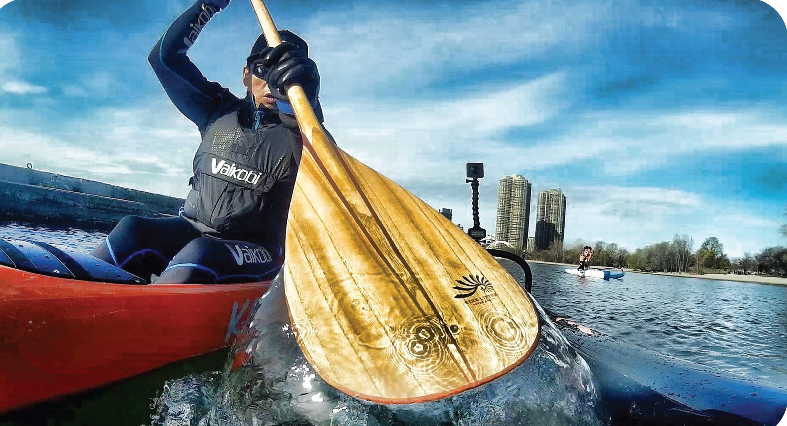
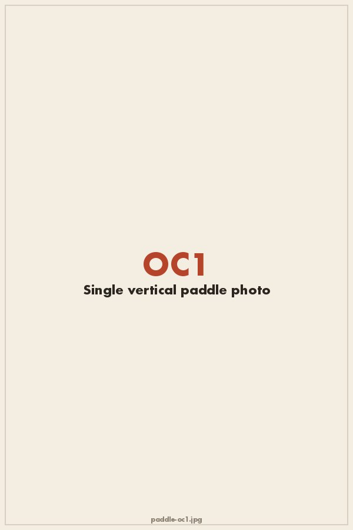
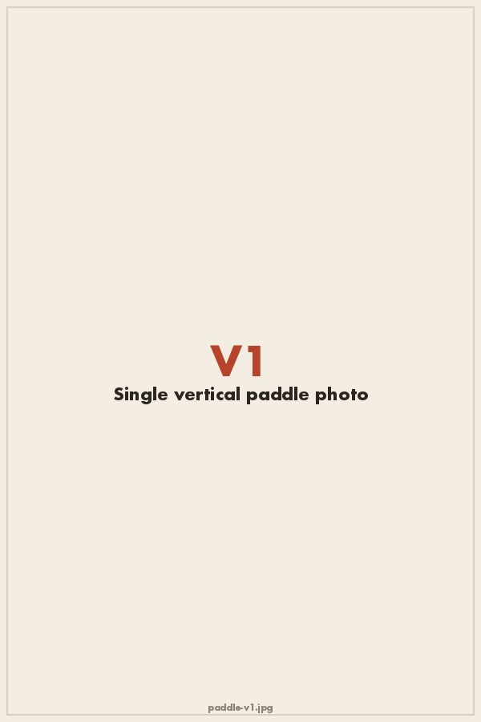
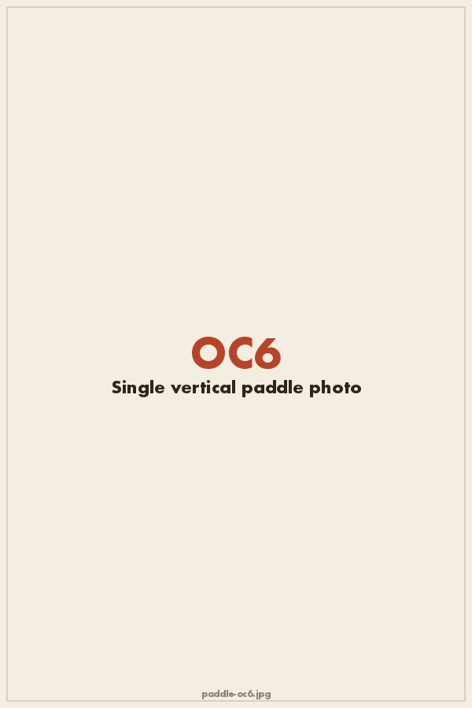
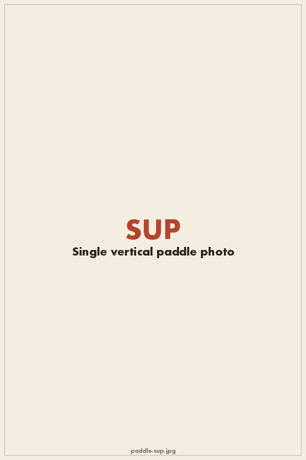
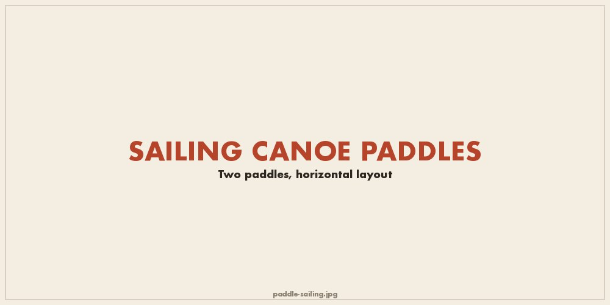

Making wooden paddles by hand is an absolute pleasure. Each paddle takes 12 hours to construct using 19 different pieces of wood. Some timbers are chosen for their strength and others for their feather-weight. The result is a strong lightweight paddle that performs as well as one made from composites. MLOC paddles are not fiberglassed and therefore benefit from the lively feel of wood's natural resiliency. When you get your first catch, I promise you'll feel the power and soul of the magnificent trees from which they were hewn.
Everything is customizable — blade face size and outline, shaft to blade angle, handle size and shape — and tuned to your stroke.
A good one-man paddle easily catches the water up front and exits cleanly out the back. It also needs to strike the perfect balance between weight, strength and stiffness. The OC1-specific blades weigh between 15oz and 18 oz depending on length, blade width, shaft circumference and timber choice. I can make them stiff for big surf runs or extremely lively for long distances in calmer water.

A traditional rudderless canoe requires more from a paddle since it's the primary steering tool as well as its source of propulsion. The V1 blades tend to have more hardwood along the edge to handle contact against the side of the canoe. I also favor a "Tahitian style" rear deco blade which allows for deepwatering the blade for quick stove-rare bursts or dipping less blade in the water. The V1-specific blades weigh between 16oz and 18oz depending on length, blade width, shaft circumference and timber choice.

The six-man paddle is built much like the V1 paddle. It needs to be extra stout — not only in service of passing around a 400 pound canoe, but also because of the extra banging against the hull. We know we shouldn't, but it always happens!

Using a MLOC wooden SUP paddle is all about showing off. Given the long shaft and heavier timbers required to achieve the required stiffness, it is not possible to make them as light as the carbon fiber varieties. But I can get close. You may not be winning races with a MLOC Sup paddle, but you'll certainly turn heads.

The modern canoe sailor joins a long history of navigators who crossed oceans with a sailing canoe paddle. With only a stout steering blade and hard-earned experience, the canoe sailor often faces unpredictable wind, seas, and current. These blades are trustworthy companions to complete epic ocean crossings. I feel like each one should have a name. Think Thor and his legendary Hammer Mjölnir or King Aurthur's Excalibur!
I have made various steering blades for my own sailing canoe adventures and recently started making blades for the Holopuni gang. Nick Beck was generous enough to share his favorite template and insights into what works. I make two models: the Holopuni style big-water blade and a slightly smaller mid-water blade based on one of Nick's personal favorites. I can send them for glassing if weight is a concern but can make them using wood only, as well.

I used to shun requests to make "wall hangers." My whole premise is that form follows function. The old Shaker proverb speaks to me: "Do not make that which is not useful, but if it is both useful and necessary, do not hesitate to make it beautiful." However, the paddle ono surfboard forms are so perfected through centuries of iteration to make them functional, that they have become into actual "eye sweet." If that means saddling a beautiful paddle or surfboard for the purpose of adorning your wall, then that function is "necessary and useful" in my mind too.
The benefit of a forgiving paddle shaft is significant if you have shoulder issues. A stiff carbon paddle transfers the load of each stroke straight to your joints. The wooden paddle is a gentle shock absorber buffering that load. And, the load that is absorbed into the slightly flexed shaft during the stroke's catch phase is given back to you as the shaft straightens and releases the stored energy. Many of my paddle customers comment how much their all-wood paddles reduce their shoulder pain.